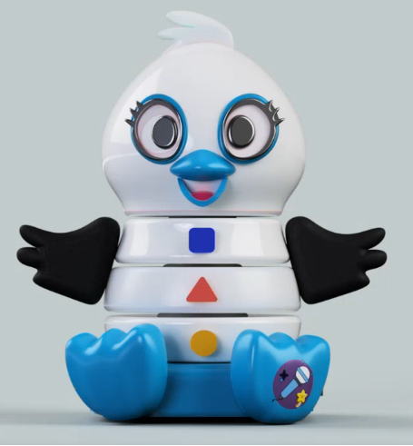
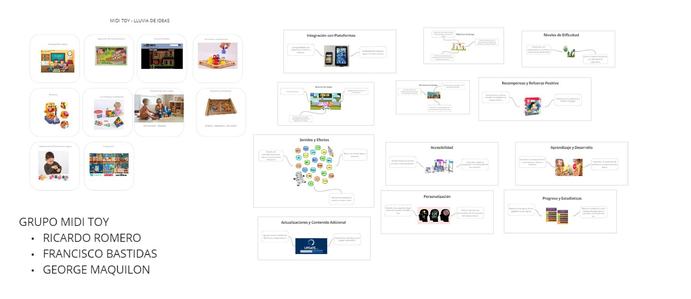
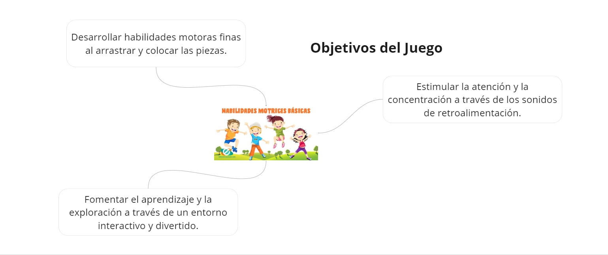
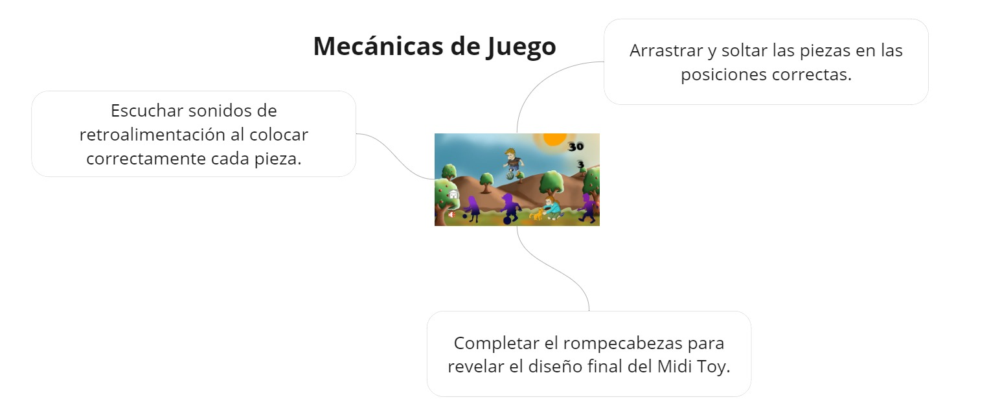
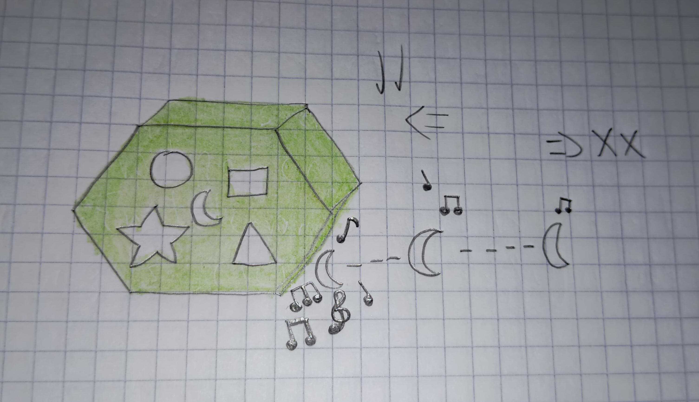

Midi Toy¡Explora el mundo musical con Midi Toy! Sumérgete en una experiencia única donde podrás jugar, experimentar y disfrutar de música infantil utilizando a MIDI TOY en este emocionante y divertido juego. Descubre melodías encantadoras, interactúa con coloridos personajes musicales y desarrolla tus habilidades creativas mientras te diviertes. |
 |
|  |
|
Se siguieron los pasos de ideación: diseño centrado en el juego, establecer objetivos de experiencia y crear prototipos y pruebas. "Lluvia de Ideas": Iniciamos con una sesión de lluvia de ideas en la que todo el equipo participó activamente, generando una variedad de conceptos y características posibles para el videojuego, priorizando cantidad. "Mapa Mental": Utilizamos un mapa mental para organizar y desarrollar las ideas generadas, visualizando la conexión entre los distintos elementos del videojuego. |
"Análisis": Se consideraron varios factores clave para asegurar que las ideas seleccionadas fueran las más prometedoras y viables:
1. Relevancia con el objetivo principal del juguete.
2. Viabilidad técnica y de recursos.
3. Beneficios en el aprendizaje del niño y accesibilidad.
4. Enfoque inicial en la proyección y metas a alcanzar.
|  |
Objetivos enfocados al aprendizaje y desarrollo del niño. |
|  |
Mecánicas enfocadas en la motricidad del niño. |
BLOQUE AVENTURA: El juego consiste en que se tiene un objeto grande, una figura geométrica, con espacios que son figuras donde el niño debe colocar correctamente las piezas.
|  |